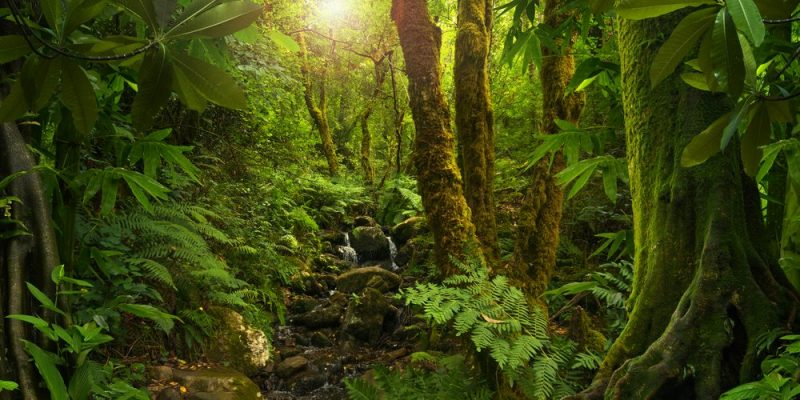

ESPECIES EMDEMICAS
- 
La evolución de las especies endémicas en Oaxaca ha estado influenciada por una variedad de factores a lo largo del tiempo. Antes, estas especies habrían experimentado cambios en respuesta a eventos geológicos, climáticos y otras presiones ambientales a lo largo de millones de años. Por ejemplo, la formación de montañas y la variación climática habrían llevado a la especiación y la adaptación.
En tiempos más recientes, la actividad humana ha tenido un impacto significativo en la evolución de las especies endémicas. La deforestación, la urbanización, la agricultura intensiva y otras actividades humanas han alterado los hábitats naturales y han llevado a la fragmentación del paisaje, lo que puede resultar en la pérdida de diversidad genética y la extinción local de especies.
Además, el cambio climático está ejerciendo presión adicional sobre estas especies, alterando los patrones de temperatura y precipitación y modificando los ecosistemas en los que viven.
En resumen, la evolución de las especies endémicas en Oaxaca ha sido moldeada por una interacción compleja de factores naturales y humanos a lo largo del tiempo, y comprender estos procesos es crucial para su conservación futura.
 Oaxaca es uno de los estados de México con mayor biodiversidad y cuenta con una gran cantidad de especies endémicas.
La riqueza natural de Oaxaca es simplemente impresionante.
En este estado, habitan al menos 304 especies de mamíferos,
738 especies de aves, 226 especies de reptiles y 48 especies
de anfibios.
Oaxaca es uno de los estados de México con mayor biodiversidad y cuenta con una gran cantidad de especies endémicas.
La riqueza natural de Oaxaca es simplemente impresionante.
En este estado, habitan al menos 304 especies de mamíferos,
738 especies de aves, 226 especies de reptiles y 48 especies
de anfibios. Además, Oaxaca es hogar de una gran cantidad de especies endémicas, es decir, especies que solo se encuentran en este lugar del mundo. Algunos ejemplos son la iguana de la sierra de
Oaxaca, la serpiente de cascabel de la Sierra Madre de Oaxaca y el murciélago de cola libre de Oaxaca.
Para descubrir la riqueza natural de Oaxaca y sus especies endémicas, existen diversas rutas y tours guiados que te llevarán a través de los diferentes ecosistemas que se encuentran en el estado.
Podrás conocer la Sierra Madre de Oaxaca, la Selva Lacandona y el Istmo de Tehuantepec, entre otros.
Es importante proteger la biodiversidad de Oaxaca y sus especies endémicas. La deforestación, la caza furtiva y el cambio climático son algunos de los principales problemas que enfrentan estas especies y su ecosistema.
Es necesario que todos tomemos conciencia de la importancia de la conservación de la naturaleza y tomemos medidas para
protegerla.
¿Te animas a descubrir la riqueza natural de Oaxaca y sus especies endémicas? ¡Te aseguramos que será una experiencia inolvidable!
Además, Oaxaca es hogar de una gran cantidad de especies endémicas, es decir, especies que solo se encuentran en este lugar del mundo. Algunos ejemplos son la iguana de la sierra de
Oaxaca, la serpiente de cascabel de la Sierra Madre de Oaxaca y el murciélago de cola libre de Oaxaca.
Para descubrir la riqueza natural de Oaxaca y sus especies endémicas, existen diversas rutas y tours guiados que te llevarán a través de los diferentes ecosistemas que se encuentran en el estado.
Podrás conocer la Sierra Madre de Oaxaca, la Selva Lacandona y el Istmo de Tehuantepec, entre otros.
Es importante proteger la biodiversidad de Oaxaca y sus especies endémicas. La deforestación, la caza furtiva y el cambio climático son algunos de los principales problemas que enfrentan estas especies y su ecosistema.
Es necesario que todos tomemos conciencia de la importancia de la conservación de la naturaleza y tomemos medidas para
protegerla.
¿Te animas a descubrir la riqueza natural de Oaxaca y sus especies endémicas? ¡Te aseguramos que será una experiencia inolvidable!
El mundo está lleno de vida y diversidad, y una de las maneras de apreciar esta riqueza es a través de la observación de especies endémicas. Estas especies son únicas y exclusivas de una región o área geográfica determinada, lo que las hace aún más fascinantes. En América del Sur, por ejemplo, podemos encontrar al oso de anteojos, también conocido como oso andino, que vive en los bosques de los Andes y es el único oso de Sudamérica. En Australia, el monotremo es uno de los mamíferos más extraños del mundo, con la capacidad de poner huevos y producir leche para alimentar a sus crías. En Madagascar, la isla más grande del mundo que alberga una gran cantidad de especies endémicas, podemos encontrar al lémur de cola anillada, un primate que solo habita en esa isla y que está en peligro de extinción debido a la deforestación y la caza furtiva. En las islas Galápagos, ubicadas en el océano Pacífico, encontramos especies endémicas como la iguana marina y la tortuga gigante, que han sido estudiadas por científicos durante décadas debido a su singularidad y adaptación al medio ambiente. En resumen, la observación y estudio de las especies endémicas nos permiten entender mejor la biodiversidad y la importancia de conservar los ecosistemas naturales. Además, nos recuerda que cada región del mundo tiene tesoros únicos que debemos valorar y proteger.
Oaxaca es un estado mexicano con una gran biodiversidad. En este territorio, podemos encontrar una gran variedad de especies animales, algunas de ellas endémicas. Según estudios recientes, se han registrado alrededor de 3,900 especies de animales en Oaxaca. Entre los animales más representativos de este estado se encuentran el jaguar, el tapir, el venado cola blanca, el armadillo, el conejo de los volcanes, el tlacuache, el zopilote rey, el tecolote y la iguana. Además, podemos encontrar una gran variedad de aves, reptiles, anfibios, insectos y mamíferos marinos. La costa oaxaqueña es una de las áreas más importantes de anidación de tortugas marinas en México. La conservación de la fauna en Oaxaca es muy importante, ya que muchas especies se encuentran en peligro de extinción. Es necesario tomar medidas para proteger su hábitat y evitar su caza y tráfico ilegal. En definitiva, Oaxaca es un estado que alberga una gran riqueza de fauna, lo que lo hace un lugar único en el mundo. Es importante fomentar la conciencia ambiental y la educación para proteger a estas especies y garantizar su supervivencia en el futuro. ¡Y hasta aquí nuestra completa guía sobre las especies endémicas de Oaxaca! Esperamos que hayas disfrutado de este recorrido por la riqueza natural de esta región del sur de México. Si tienes la oportunidad de visitar Oaxaca, no dudes en adentrarte en sus bosques y montañas para descubrir más de cerca estas especies tan únicas y valiosas. ¡Gracias por leernos y hasta la próxima!
¡¡No hagamos cosas buenas que parezcan malas!!